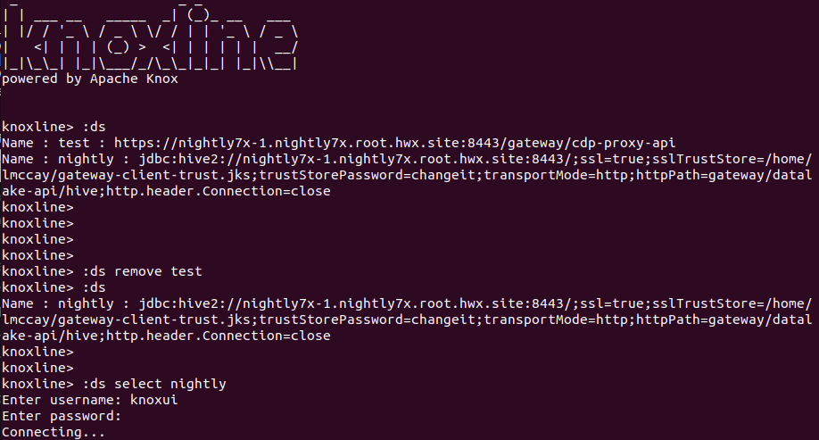
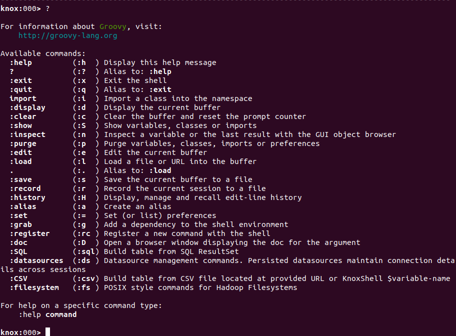
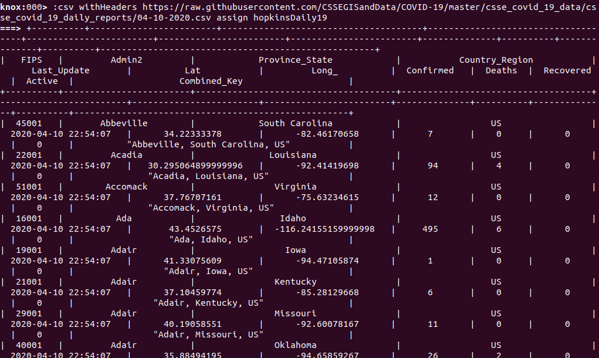
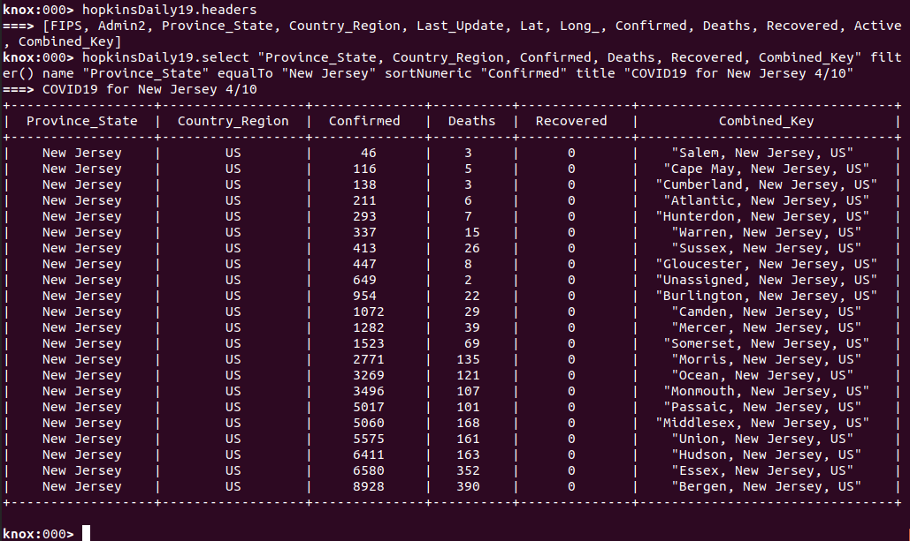
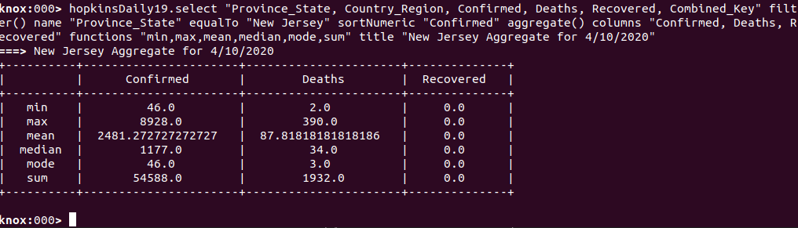
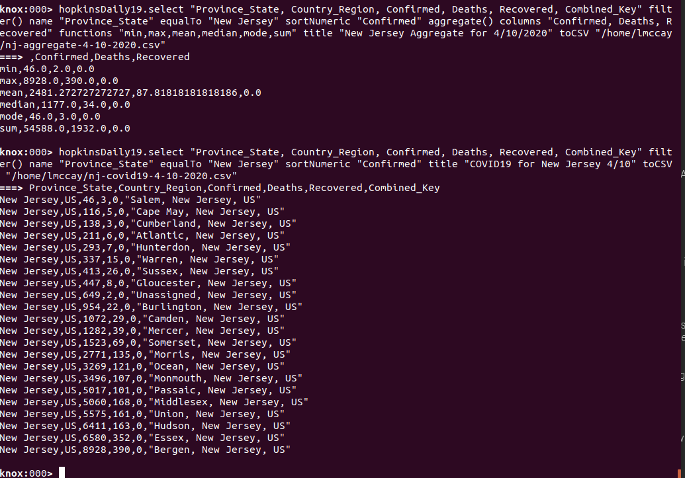
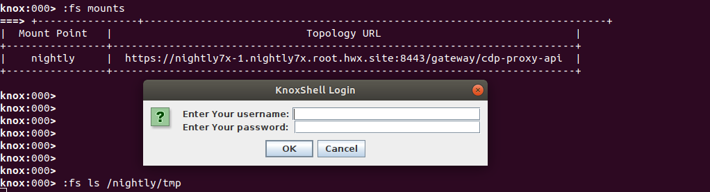
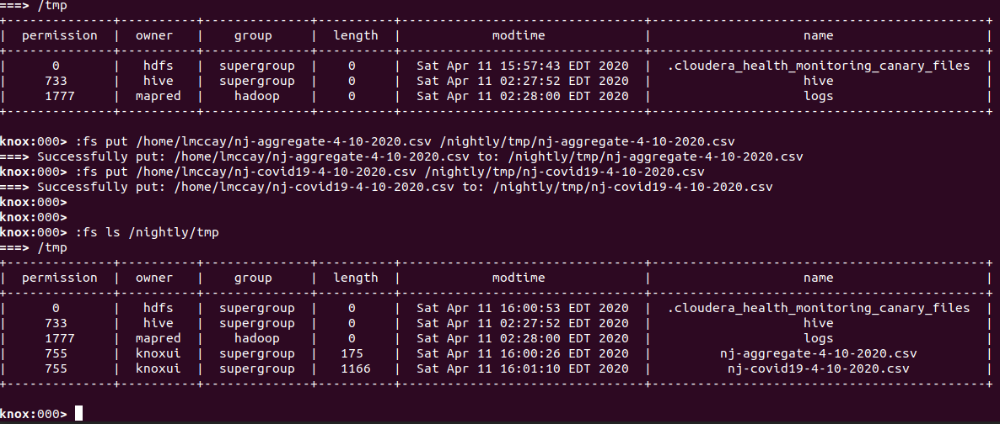
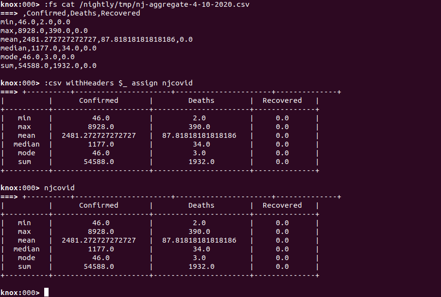

Apache Knox - KnoxShell 2.1.x User Guide¶
Introduction¶
The KnoxShell environment has been extended to provide more of an interactive experience through the use of custom commands and the newly added KnoxShellTable rendering and dataset representation class. This is provided through by integrating the power of groovysh extensions and the KnoxShell client classes/SDK and make for some really powerful command line capabilities that would otherwise require the user to SSH to a node within the cluster and use CLIs of different tools or components.
This document will cover the various KnoxShell extentions and how to use them on their own and describe combinations of them as flows for working with tabular data from various sources.
Representing and Working with Tabular Data¶
The ability to read, write and work with tabular data formats such as CSV files, JDBC resultsets and others is core to the motivations of this KnoxShell oriented work. Intentions include: the ability to read arbitrary data from sources from inside a proxied cluster or from external sources, the ability to render the resulting tables, sort the table, filter it for specific subsets of the data and do some interesting calculations that can provide simple insights into your data.
KnoxShellTable represents those core capabilties with its simple representation of a table, operation methods and builder classes.
KnoxShellTable¶
KnoxShellTable has a number of dedicated builders that have a fluent API for building table representations from various sources.
Builders¶
The following builders aid in the creation of tables from various types of data sources.
JDBC¶
ports = KnoxShellTable.builder().jdbc().
connect("jdbc:hive2://knox-host:8443/;ssl=true;transportMode=http;httpPath=topology/cdp-proxy-api/hive").
driver("org.apache.hive.jdbc.HiveDriver").
username("lmccay").pwd("xxxx").
sql("select * FROM ports");
Running the above within KnoxShell will submit the provided SQL to HS2, create and assign a new KnoxShellTable instance to the "ports" variable representing the border ports of entry data.
CSV¶
crossings = KnoxShellTable.builder().csv().
withHeaders().
url("file:///home/lmccay/Border_Crossing_Entry_Data.csv")
A higher level KnoxShell Custom Command allows for easier use of the builder through more natural syntax and hides the use of the lower level classes and syntax.
Join¶
Running the above within KnoxShell will import a join the two tables with a simple match of the values in left and right tables on each row that matches.
JSON¶
tornados = KnoxShellTable.builder().json().
url("file:///home/lmccay/.knoxshell/.tables/tornados.json")
Persistence and Publishing¶
Being able to create tables, combine them with other datasets, filter them and add new cols based on calculations between cols, etc is all great for creating tables in memory and working with them.
We also want to be able to persist these tables in a KnoxShellTable canonical JSON format of its own and be able to reload the same datasets later.
We also want to be able to take a given dataset and publish it as a brand new CSV file that can be pushed into HDFS, saved to local disk, written to cloud storage, etc.
In addition, we may want to be able to write it directly to Hive or another JDBC datasource.
JSON¶
The above will return and render a JSON representation of the tornados KnoxShellTable including: headers, rows, optionally title and optionally callHistory.CSV¶
The above will return and render a CSV representation of the tornados KnoxShellTable including: headers (if present), and all rows.Note that title and callhistory which are KnoxShellTable specifics are excluded and lost unless also saved as JSON.
Usecases¶
- JDBC Resultset Representations
- CSV Representations
- General Table Operations
- Joining
- Sorting, Selecting, Filtering, Calculations
- Persistence and Publishing
- KnoxLine SQL Shell
- Custom GroovySh Commands
Let's take a look at each usecase.
JDBC Resultset Representations¶
KnoxLine SQL Client requires a tabular representation of the data from a SQL/JDBC Resultset. This requirement led to the creation of the KnoxShellTable JDBC Builder. It may be used outside of KnoxLine within your own Java clients or groovy scripts leveraging the KnoxShell classes.
ports = KnoxShellTable.builder().jdbc().
connect("jdbc:hive2://knox-host:8443/;ssl=true;transportMode=http;httpPath=topology/datalake-api/hive").
driver("org.apache.hive.jdbc.HiveDriver").
username("lmccay").pwd("xxxx").
sql("select * FROM ports");
It can create the cols based on the metadata of the resultset and accurately represent the data and perform type specific operations, sorts, etc.
A higher level KnoxShell Custom Command allows for the use of this builder with Datasources that are managed within the KnoxShell environment and persisted to the users' home directory to allow continued use across sessions. This command hides the use of the underlying classes and syntax and allows the user to concentrate on SQL.
CSV Representations¶
Another dedicated table builder is provided for creating a table from a CSV file that is imported via URL.
Combined with all the general table operations and ability to join them with other KnoxShellTable representations, this allows for CSV data to be combined with JDBC datasets, filtered and republished as a new dataset or report to be rendered or even reexecuted later.
General Table Operations¶
In addition to the builders described above, there are a number of operations that may be executed on the table itself.
Sorting¶
When a column is of String type values but they are numerics, you may also sort numerically.
The above will sort the tornados table by the "state" column.
Selecting¶
The above will return and render a new table with only the subset of cols selected.Filtering¶
The above will return and render a table with only those tornados that resulted in one or more fatalities.Fluent API¶
The above operations can be combined in a natural, fluent manner
tornados.select("state,cat,inj,fat,date,month,day,year").
filter().name("fat").greaterThan(0).
sort("state")
Aggregating¶
The following method allows for the use of table column calculations to build an aggregate view of helpful calculations for multiple columns in a table and summarizes them in a new table representation.
The above allows you to combine them by streaming them into each other in one line the select of only certain cols, the filtering of only those events with more than 0 fatalities and the much more efficient sort of the resulting table.
KnoxLine SQL Shell¶
KnoxLine is a beeline like facility built into the KnoxShell client toolbox with basic datasource management and simple SQL client capabilities. ResultSets are rendered via KnoxShellTable but further table based manipulations are not available within the knoxline shell. This is purely dedicated to SQL interactions and table renderings.
For leveraging the SQL builder of KnoxShellTable to be able to operate on the results locally, see the custom KnoxShell command 'SQL'.

Once connected to the datasource, SQL commands may be invoked via the command line directly.
Custom GroovySh Commands¶
Groovy shell has the ability to extend the commands available to help automate scripting or coding that you would otherwise need to do programmatically over and over.
By providing custom commands for KnoxShellTable operations, builders and manipulation we can greatly simplify what would need to be done with the fluent API of KnoxShellTable and groovy/java code for saving state, etc.
KnoxShell Commands:¶
- Datasources (:datasource|:ds) CRUD and select operations for a set of JDBC datasources that are persisted to disk (KNOX-2128)
- SQL (:SQL|:sql) SQL query execution with persisted SQL history per datasource (KNOX-2128)
- CSV (:CSV|:csv) Import and Export from CSV and JSON formats
- Filesystem (:Filesystem|:fs) POSIX style commands for HDFS and cloud storage (mount, unmount, mounts, ls, rm, mkdir, cat, put, etc)

EXAMPLE: COVID19 Data Flow into DataLake¶
Let's start to put the commands and table capabilities together to consume some public tabular data and usher it into our datalake or cluster.
Build Table from Public CSV File¶

The use of the CSV KnoxShell command above can be easily correlated to the CSV builder of KnoxShellTable. It is obviously less verbose and more natural than using the fluent API of KnoxShellTable directly and also leverages a separate capability for KnoxShell to assign the resulting table to a KnoxShell variable that can be references and manipulated afterward.
As you can see the result of creating the table from a CSV file is a rendering of the entire table and often does not fit the screen propertly. This is where the operations on the resulting table come in handy for explorer the dataset. Let's filter the above dataset of COVID19 across the world to only a subset of columns and for only New Jersey by selecting, filtering and sorting numerically by number of Confirmed cases.
Select Columns, Filter and Sort by Column¶
First we will interrogate the table for its column names or headers. Then we will select only those columns that we want in order to fit it to the screen, filter it for only New Jersey information and sort numerically by the number of Confirmed cases per county.

From the above operation, we can now see the COVID19 data for New Jersey counties for 4/10/2020 sorted by the number of Confirmed cases and the subset of cols of the most interest and tailored to fit our screen. From the above table, we can visually see a number of insights in terms of the most affected counties across the state of New Jersey but it may be more interesting to be able to see an aggregation of some of the calculations available for numeric columns through KnoxShellTable. Let's take a look at an aggregate table for this dataset.
Aggregate Calculations on Columns of Table¶
Since the KnoxShellTable fluent API allows us to chain such operations together easily, we will just hit the up arrow to get the previous table operation command and add the aggregate operation to the chain.

Now, by using both tables above, we can see that my county of Camden is both visually in approximately the center of the counties in terms of Confirmed case numbers but how it stands related to both the average and the median calculations. You can also see the sum of all of New Jersey and the number of those that belong to my county.
Persist Tables to Local Disk¶
Next, we will persist these tables to our local disk and then push them into our HDFS based datalake for access by cluster resources and other users.

Add Tables to DataLake¶
Now that we have these tables persisted to local disk, we can use our KnoxShell Filesystem commands to add them to the datalake.
Building KnoxShell Truststore¶
Before we can access resources from datalake behind Knox we need to insure that the cert presented by the Knox instance is trusted. If the deployment is using certs signed by a well-known ca, then we generally don't have to do anything. If we are using Knox self-signed certs or certs signed by an internal ca of some sort then we must import them into the KnoxShell truststore. While this can be located in arbitrary places and configured via system properties and environment variables, the most common approach is to use then default location.
// exit knoxshell
^C
bin/knoxshell.sh buildTrustStore https://nightly7x-1.nightly7x.root.hwx.site:8443/gateway/datalake-api
ls -l ~/gateway-client-trust.jks
// to reenter knoxshell
bin/knoxshell.sh
With the default password of 'changeit'.
Mount a WebHDFS Filesystem¶
We may now mount a filesystem from the remote Knox instance by mounting the topology that hosts the WebHDFS API endpoint.
Accessing a Filesystem¶
Once we have the desired mount, we may now access it by specifying the mountpoint name as the path prefix into the HDFS filesystem. Upon mounting or first access, the KnoxShell will prompt for user credentials for use as HTTP Basic credentials while accessing WebHDFS API.

Once we authenticate to the mounted filesystem, we reference it by mountpoint and never concern ourselves with the actual URL to the endpoint.
Put Tables into DataLake¶

Above, we have put the previously persisted CSV files into the tmp directory of the mounted filesystem to be available to other datalake users.
We can now also access them from any other KnoxShell instance that has mounted this filesystem with appropriate credentials. Let's now cat the contents of one of the CSV files into the KnoxShell and then render it as a table from the raw CSV format.
Pull CSV Files from WebHDFS and Create Tables¶

Note that the cat command returns the CSV file contents as a string to the KnoxShell environment as a variable called '_' .
This is true of any command in groovysh or KnoxShell. The previous result is always available as this variable. Here we pass the contents of the variable to the CSV KnoxShellTable builder string() method. This is a very convenient way to render tabular data from a cat'd file from your remote datalake.
Also note that tables that are assigned to variables within KnoxShell will render themselves just by typing the variable name.